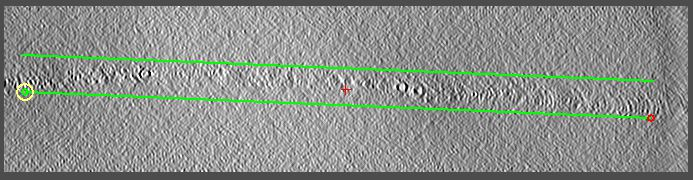

Processing a Cryo-Tilt Series with Fiducials
(IMOD 4.8)
University of Colorado,
Boulder
This is a guided introduction to generating a tomogram from a tilt series
of a cryo-sample with gold beads as fiducial markers for alignment. It
presents the most important concepts and details and provides brief explanations
of some points. For more details, consult the Tomography Guide, which you
can open from the Help menu in eTomo. It is also advisable to read through
relevant sections of the Tomography Guide before trying to process your own tilt
series. If you have processed a tilt series in eTomo before, you may want
to do the dual-axis tutorial before this
example, especially if you have difficulty following the steps below without
shots of how the screen should appear.
First, a few points on conventions: labels in the eTomo or 3dmod interface are shown
in Bold, and entries in fields are shown in italics. For
mouse operations in the Zap window in 3dmod, the buttons are referred to as
"first", "second", and "third" because the buttons can be remapped in 3dmod.
If you have not changed the mapping, this corresponds to left, middle, and
right; otherwise, it refers to whatever you have chosen to be the first, second,
and third buttons.
Getting started:
-
Download the sample data set from our web site.
- Move the data set file "cryoExampleData.tar.bz" to the directory where you want to
work on it. Its contents will unpack into a subdirectory named "cryo".
- cd to the directory with the file
- Enter the command:
imoduntar cryoExampleData.tar.bz
or, anywhere except on Windows without Cygwin, you can use
tar -xjf cryoExampleData.tar.bz
- Enter the dataset directory with:
cd cryo
- Now you need to redefine the environment variable IMOD_CALIB_DIR to be the
current directory, which is simply "." (a period or dot), so that eTomo can find
some microscope-specific files used in the processing. Thus, you need to
enter a period at the end of all the command below to represent
the current directory.
- On Linux, Mac OS X,
or Windows with Cygwin, first give this command so that you will still have access
to parallel processing resources:
cp $IMOD_CALIB_DIR/cpu.adoc .
- On Linux, Mac OS X, or Windows with Cygwin, if you are using the bash shell or a related shell,
enter:
export IMOD_CALIB_DIR=.
Or, if you are use tcsh as the shell, enter:
setenv IMOD_CALIB_DIR .
- On Windows without Cygwin, enter:
set IMOD_CALIB_DIR=.
- Start the eTomo interface with:
etomo
Tomogram setup:
In this initial step, we define some features of the data set and create the
files needed for processing.
-
Press Build Tomogram in the eTomo "Front Page"
-
Press the yellow file chooser icon on the Datatset name line and select the stack file.
-
For SystemTemplate, select
cryoSample.adoc. This will set several parameters appropriately for cryo
reconstructions; you should generally select a template.
-
Press Scan Header to retrieve the pixel size and rotation angle of
the tilt axis from the image file.
-
Enter “15” for Fiducial diameter
-
Select Parallel Processing if you have more than one CPU core.
-
Select Graphics card processing if you have an Nvidia card with a GPU that can be used with IMOD.
-
For Image distortion field file,
select 27.5kGIF2007-03-24.idf. Data were taken with an energy filter which introduces significant geometric distortions.
The distortions were measured and can be corrected with this file.
-
Press View Raw Stack and scroll
through the images to see that they are not well-aligned.
Notice the 4 contrast control sliders, which are present because the
data have been loaded as integers.
The top two sliders are very close together, which means the image data occupy a
very small fraction of the full data range; the rest of the data range is taken
up by image artifacts due to X-rays.
-
Press Create Com Scripts
Pre-processing:
This step is needed to remove artifacts in the images, generally produced by
X-ray events in the camera. These artifacts will produce streaks in a
reconstruction and can also make it harder to see the image features, which have
a much smaller dynamic range than the artifacts.
-
Press Show Min/Max for Raw Stack to
see the range of the data; both a plot of minimum and maximum values and a table
with more detailed information will open. Every view has a large negative minimum because there
was an X-ray artifact in the dark reference.
-
Press Create Fixed Stack to run the program that finds and erases
artifacts.
-
Press View Fixed Stack. Now there are only 2 contrast sliders because data
can be loaded as bytes after removing most of the artifacts.
-
Press Show Min/Max for Fixed Stack to
see the new range of data.
Deviations of 50-100 from the rest of the data will not matter in the
reconstruction.
- Press Use Fixed Stack.
- Press Done to advance to the next step.
Coarse Alignment
In this step, we use image cross-correlation to align successive images, which
makes it easier to track fiducial markers.
-
Press Calculate Cross-Correlation
-
When done, press Generate Coarse Aligned Stack
-
When done, press View Aligned Stack in
3dmod. Scroll through the images
to see that they now look aligned
-
Press Done to go on.
Fiducial Model Generation:
In this step, the positions of selected gold markers are found on all of the
images, which allows a more accurate alignment to be obtained.
-
Use Make seed and track and
Make seed model manually options. The option to make the seed model
automatically works quite well; we are not using it so that you learn how to do
this step manually if necessary.
-
Press Seed Fiducial Model. The Bead Fixer window opens in Make seed
mode with most of the settings that you need for adding seed points.
-
Turn on Automatic new contour in the Bead Fixer window if it is not on already. A contour is
a set of connected points. We need to put these points in separate
contours because a) we don't want to see them connected and b) each contour will
be added to with the corresponding points on other views.
-
Place the cursor very near each bead and add a point with the second mouse
button. It will be automatically centered (the Autocenter option is
turned on by eTomo in seeding mode).
-
Press the S key to save the model.
-
Switch to the Track Beads tab and press Track Seed Model.
-
The Project Log window shows the number of missing points when done. It
may be 0.
-
Press Fix Fiducial Model, which will load the tracked model into 3dmod and
switch the Bead Fixer to Fill gaps mode. You can scroll through the
views and also press the V key to see the tracks of the beads in 3D.
-
If there are missing points, you can now use the Bead Fixer to step from one gap
to the next (using the space bar as a hot key) and add a point, if appropriate. A bead does not need to be
marked on every view, and you should not add a point if the bead's position is
not clear. If you add points, be sure to save the model with the S
key.
-
Another way to complete the model is to press Track with Fiducial Model as
Seed. It is a good idea to look at the model in 3D first and make sure
there are not deviant points at the ends of contours that should be
fixed first.
-
Press Done to go on.
Fine Alignment:
Next the bead positions are fit to a mathematical model of specimen movements.
The model predicts a position for each bead on each view, and the mean distance
between the predicted and actual positions is referred to as the "mean residual
error". These errors will let you find and correct badly modeled points.
The need to do so has been much reduced by the recent addition of a method
called "robust fitting", which automatically gives less weight or even
eliminates the points most likely to be at incorrect positions. However,
it is good to learn how positions can be fixed manually.
-
Select Do not sort fiducials into 2 surfaces for analysis
-
Press Compute Alignment. When it is done, the Mean residual error
will appear in the Project Log.
-
Press View 3D Model to open the model of solved positions in 3D and
assess whether to solve for distortion (stretching and skew). Press the R
key in the Model View window for a side-view of the model. If you press the
middle mouse button and move the mouse to the right, the model will rotate until
the three lower beads are very close together.
-
To solve for distortion, fiducials should be well-distributed in Z: not all on
one plane, more than a few at a different Z height, and the ones at a different
height distributed over the area. This is not often the case for cryo data
sets, and this one fails the latter two tests.
-
Press View/Edit Fiducial Model. The Bead Fixer will open in (or
be switched to) Fix big
residuals
mode and read in the log from alignment. Zoom up in the Zap window to 2 or
so. It is also helpful to switch the Zap window to keeping the current
model point centered, by pressing the concentric squares in the toolbar.
-
If you press Go to Next Big Residual or the single quote (') key, it will
move to each point with a big residual in order by decreasing value. If a
point is not centered on the gold bead, you can move it to the correct position
by clicking with the third mouse button. The red arrow points to the
position predicted by the alignment solution; it is not based on any knowledge
of what is in the image. This position may not be
correct, but if it is, you can move the point to that position with
Move Point by Residual or the semicolon (;) key.
-
All of the biggest residuals occur at very high tilt, and each point has been
correctly modeled, so there is nothing to fix. The reason for this is
evident if you examine the output from the alignment program.
-
Right-click in eTomo over the Fine Alignment panel and select Align
log file. The error summary and the ratio of measured values to
variables solved for are in the Errors tab. Switch to the
Solution tab to see the alignment parameters.
-
Various columns from the solution table can be plotted by right-clicking in
eTomo and selecting a particular parameter. Right-click and select Plot
global mean residual. Notice that the mean residual gets much higher
at high tilt, which is why we saw only those points having the biggest
residuals.
-
To find possible erroneous points at lower tilts in this case, under Residual
Reporting, select Relative to Neighboring views.
Press Compute Alignment again.
-
There are no new points to fix.
-
Press Done to go on.
Tomogram Positioning
The goal of this step is to set angles and an offset in Z so that the specimen
is flat and centered in Z in the computed volume, thus minimizing the
computational effort.
-
Set Sample tomogram thickness to 500.
-
Press Create Whole Tomogram to build a whole, binned-down tomogram.
-
Press Create Boundary Model to open the tomogram
-
Open a Slicer window with Image-Slicer. Set X-rotation to 90
and Thick: Img to 20, which makes it average 20 slices.
-
The goal is to draw a pair of lines enclosing the sample at ~3 different Y
locations in the tomogram. For this specimen we can see the boundaries of the
sample well in cross-section, so this is the easiest way to draw them.
-
Use the View axis position slider to scroll through Y and get a sense of
how the boundaries change.
-
Go to the middle (~340) and draw two lines. 3dmod will automatically start
a new contour after two points. Move the current point with the third
mouse button; use the first mouse button to select a new current point. See the
image below.
-
Do the same near the lower end of the tomogram (axis position ~70) and the upper
end (~610). Your final model should 6 contours with 2 points each.
-
Save the model with the S key.
-
Press Compute Z Shift & Pitch Angles. The angle offset, Z shift, X-axis
tilt and tomogram thickness are shown; these will give the thinnest, most level
tomogram containing the area you outlined. The required thickness is also
shown.
-
Press Create Final Alignment, which reruns the fine
alignment.
-
Press Done to go on.

Final Aligned Stack Creation and CTF Correction:
-
Press Create Full Aligned Stack.
-
Switch to Correct CTF tab. Set Voltage (KV) to 300.
-
Press the file chooser icon on Config file and select F30_UltraCam_2008.cfg.
-
The Expected defocus of 8.0 happens to be correct.
-
Press Run CTF Plotter.
-
Draw a rubber band to zoom up on part of the curve, such as frequency from 0.1
to 0.5, log power from -0.2 to 0.4
-
Switch to All tiles
-
Press Fitting to open the Fitting Range & Method dialog. The X1 Starts
value of 0.13 is reasonable, the X2 Ends value of 0.275 is
based on the expected position of the second zero and can be set to 0.33
to fit out to the third zero.
-
Set Baseline fitting order to 2 make the baseline flatter out to
0.4 and make it easier to fit to the peaks.
-
Select Vary exponent of CTF function; it does not affect the fit much
here but will give a better fit at other angles.
-
Now that fitting is set up, switch to Current defocus estimate in the
Angle Range dialog.
-
Set Starting tilt angle to -61, Ending tilt angle to -31,
and Step angle range by to 15, and press Apply.
-
The fitting is good here, so press Store Defocus in Table.
-
Press Step Up and store the result repeatedly until the highest
positive angle is reached.
-
The same result can be obtained by pressing Autofit all Steps, but if you
did that, you would want to check the fitting by double-clicking on each row of
the table.
-
Press Save to File and exit Ctfplotter.
-
Select up to 12 CPUs in the parallel processing table.
-
Press Correct CTF then Use CTF Correction when it is
done.
Gold Erasing:
Gold beads are by far the densest items in cryo-reconstructions and they
cast artifactual rays that are about as dense as the biological features.
To minimize this effect, it is often desirable to remove the beads from the
projection images before reconstruction.
- To erase gold, select the Erase Gold tab.
- Select Use findbeads3d to find the locations of the gold in a
binned-down tomogram and project their positions onto the tilt series images.
-
Set the Thickness to 220.
-
Press Align and Build Tomogram.
-
When it is done, select Store only points above threshold and press
Run Findbeads3d. This will find the beads in the tomogram as well as
it can, and only put the points into the model that have "peak strengths" above
what it thinks is the best threshold between beads and non-beads.
-
When it is done, press View 3D Model on Tomogram. The Bead Fixer
opens with some special controls for adjusting the threshold peak strength, in
case we had stored more points in the model.
-
Press the V key to open the Model View. If you see only 10 of the 11 model
points (because of a bug in Findbeads3d) push the Threshold slider to the
left. Put the mouse near one of them and click the right button; the
Zap window will change to show that model point on the image. If
necessary, you could add or delete points in this model. Close 3dmod.
-
Press Reproject Model then View 2D Model on Aligned Stack.
Look at the high tilt views; you will see that some of the points are not
well-centered.
-
Change two parameters to compensate for this poor centering: set Diameter to
erase to 26, and turn on Iterations to grow circular areas and
set the value to 3.
-
Press Erase Beads. When it is done, press View Erased Stack
to see the result.
-
Press Use Erased Stack.
-
Press Done to go on.
Tomogram generation:
At last, you can compute the tomogram.
-
Make sure only one of the two choices Use the GPU and Parallel
processing is selected, and press Generate Tomogram.
-
Press View Tomogram in 3dmod when it is done.
-
Press Done to go on.
Post-processing:
In this step, you can trim away unneeded regions, convert the tomogram to bytes
to save time and space, and reorient the tomogram so that the slices stored in
the file are in X/Y planes instead of X/Z planes. Even if you do not
want to trim or convert to bytes, you should always go through this step to get a
reoriented tomogram, which will work better with other
programs.
-
Turn on the rubber band in the Zap window and select an area of about 1500x1500
pixels, i.e., at a window zoom of 0.5, the rubber band size on the screen of
about 750x750 pixels, as shown in the Zap toolbar.
-
You can move an edge or corner of the rubber band with the first mouse button,
or shift the whole band by pressing the second mouse button with the cursor over
an edge.
-
Scroll to the first slice that you want to keep and press Lo, then find the last
slice you want to keep and press Hi. To make a file suitable for
practicing NAD filtering, keep 60 slices or less.
-
In eTomo, press Get XYZ Volume Range from 3dmod to import these limits.
-
In the Zap window, select a narrower range of slices with Lo and Hi
that will be used to determine scaling; exclude the dense contamination on the
surface.
-
In eTomo, press Get XYZ Sub-Area from 3dmod in the Scaling section
to import these limits.
-
Press Trim Volume. When done, press 3dmod Trimmed Volume to
see the result.
-
Press Done to go on.
Automatic Seed Model Generation:
Making the seed model manually was just an training exercise; you should be able
to make this model automatically with almost all of your own data sets.
For an example of doing this, return to the Fiducial Model Generation
page.
-
You may first wish to save the files from your manual work (cryo.seed and
cryo.fid) by copying them to a different name.
-
Switch to the Seed Model tab and select Generate Seed Model
automatically.
-
The one required entry is either a number or density of beads to select.
Enter 25 for Total number. You can enter a standard number
appropriate for the size of the images, even there are not nearly that many
beads. It will find as many as it can, but not select more than the
indicated number.
-
The option to Use boundary model is available in cases where you do not
want fiducials outside of a defined area. In cryoET, it is usually
desirable to avoid using beads over the carbon, if possible.
-
Press Generate Seed Model.
-
When it is done, the project log shows the essential results: there were 10
candidate beads, 1 was considered too elongated to use, and it thus picked 9.
-
Press Open Seed Model to see the points picked. You will have to
page up one view to see them. One bead was eliminated from consideration
because it was too near the left edge. The other bead skipped is in the
upper left quadrant. It looks fine at zero degrees but is actually two
beads on top of each other and tracks poorly at higher tilts. The program
eliminated it because it detected sufficient elongation in the lower tilts that
it examined.
Clean Up:
In most cases, there is no need for the intermediate files from processing.
This step allows you to remove these files and leave all of the information from
which they could easily be recreated if necessary. The original raw tilt
series stack can also "archived" by compressing its difference from the current
stack; this operation is reversible.
- Press Archive Original Stack and confirm the deletion of the original
stack when it is done.
- All intermediate files are now shown in the box. Click in the box and
type Ctrl-A to select all files. You could then click on individual files
while holding down the Ctrl key to unselect them. You might wish to leave
cryo.preali (coarse aligned stack), cryo.ali (final aligned stack), or
cryo_full.rec (raw reconstruction, which could be trimmed differently).
- Press Delete Selected to remove the intermediate files that are still
selected.